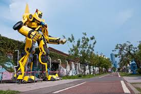
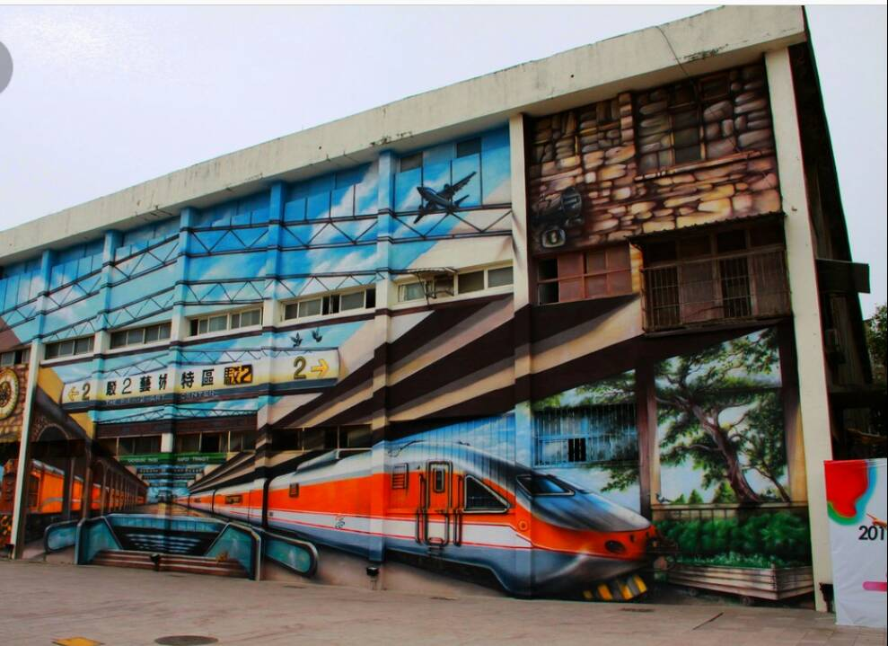

<html>

<head>

<title>我的首頁 駁二藝術特區</title>

</head>


<body bgcolor="#99ccAA" text="fff0ff">
<center>

<div>

<video src="1A.mp4" controls autoplay />

</div>  


<div>

<audio src="002.mp3" controls autoplay />

</div>  


</body>

</html>

<body>

<center>


<a href="2nd.html">連到第2頁 駁二小火車 </a>


<a href="3rd.html">連到第3頁 駁二造型椅</a>


<a href="4page.html">連到第4頁 網際網路心得</a>


<br>






<br>


<font face ="標楷體">
駁二藝術特區<br>

在駁二這個地方，衝突是一股美好的力量。<br>

被歷史塵封的陳舊倉庫，時光凝結了種種發展跡象，因為藝術文化的呼聲被解放，<br>


不斷注入創意靈感而重獲新生，日漸茁壯。在<i>舊</i>與<i>新</i>的衝突中，衝撞出的是勃發的生命力。


</font>


</center>


</body>

</html>
